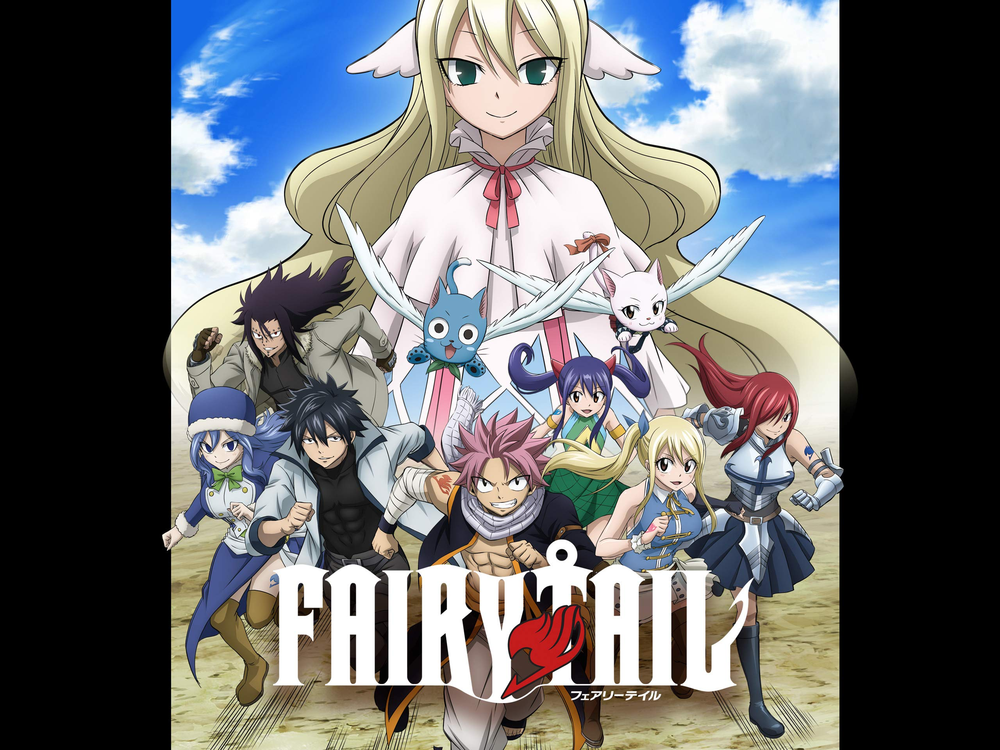

Hobbijaim
Nincs sok hobbim. Leginkább videójátékokkal szoktam játszani, illetve animéket szoktam nézni. Nagyon ritkán szoktam társasjátékozni.
Videójátékok
Viszonylag sok videójátékkal szoktam játszani. Csak egy párat fogok itt megemlíteni:
Tekken:
A kedvenc verekedős játékom. A legelső Tekken 1994-ben jelent meg az árkád gépeken, majd egy évvel később átportolták PS1-re. Jelenleg a Tekken 7-tel játszom PC-n. Kedvenc karakterem Heihachi.
Super Mario Maker 2:
Switch Lite-on játszok vele. Ezt a játékot a Nintendo adta ki 2019-ben Nintendo Switch-re. Itt mások által készített pályákkal lehet játszani, illetve lehet mások ellen versenyezni Multiplayer módban.
Animék
Animékből nem sokat láttam. Itt is csak egyet fogok röviden bemutatni:
Fairy Tail:
A leghosszabb anime, amit végignéztem. Több, mint 300 része van. Itt az emberek mágiát használnak. Az anime egy azonos nevű céhről szól, akik mindenféle feladatot elvállalnak és harcolnak a gonosszal.
